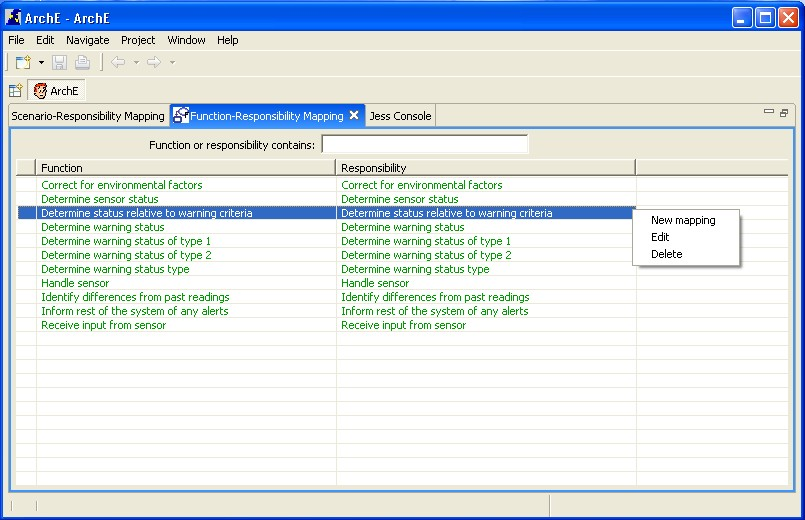
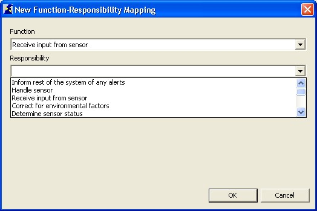

This tutorial will help you to understand the function-responsibility mapping view and the related functionalities.
Right click in the view and select New Mapping from the context menu options.

A dialog box for adding a new function-responsibility mapping should open up. The user can then specify the parent (function) and the child (responsibility) of the mapping. Cancel closes this dialog box.
After specifying the function and the responsibility, clicking OK sends the mapping to the Core and the updated fact base (with the new mapping) is reflected in the view (in the previously selected ordering).

Select a function-responsibility mapping in the view. Right click and select Edit from the context menu options.
A dialog box for editing a new function-responsibility mapping should open up. The user can then specify the new parent (function) and the child (responsibility) of the mapping. Cancel closes this dialog box.
After specifying the function and the responsibility, clicking OK sends the updated mapping to the Core and the updated fact base (with the updated mapping) is reflected in the view (in the previously selected ordering).
Select a function-responsibility mapping in the view. Right click and select Delete from the context menu options.
This tutorial briefly introduced you to all functionalities related to the ArchE Function-Responsibility Mapping View.